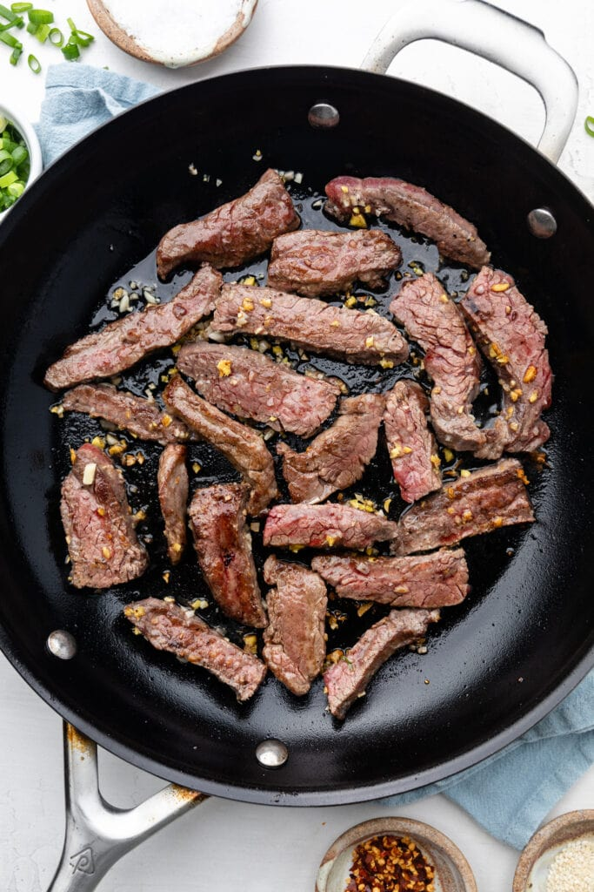
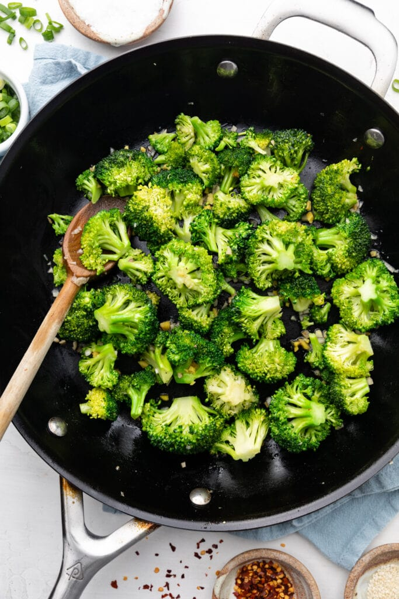
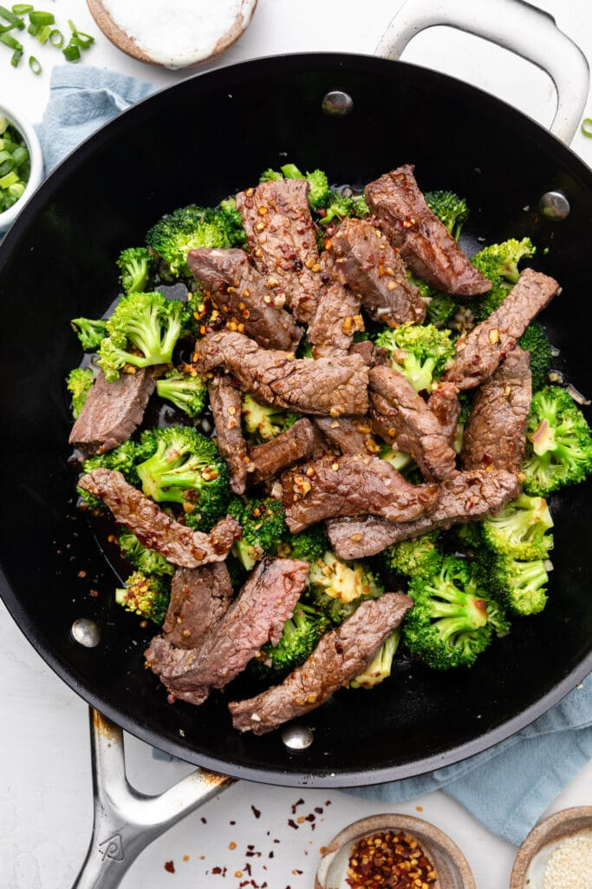

Beef and Broccoli is a simple dish of stir-fried beef and broccoli tossed in a lightly sweet and spicy sauce. This quick to make dish served over jasmine rice completes the meal as an alternative to a takeout dinner. While this dish is great with fresh beef, it's also a great recipe idea for using up leftover previously cooked beef in the fridge.
Ingredients:
1-pound top sirloin steak, thinly sliced
1/4 cup low sodium soy sauce
2 teaspoons corstarch
or substitute with 4 tablespoons of flour
1 tablespoon dark brown sugar
or substitute with 1.5 tablespoons of honey
2 tablespoons fresh ginger, minced
1 tablespoon oil
1 large head broccoli, cut into 1-inch florets
1/2 cup water
3 cloves garlic, minced
1/4 teaspoon red pepper flakes
1 teaspoon toastes sesame oil
Preparation:
In a medium bowl, mix the sirloin steak, soy sauce, cornstarch, brown sugar, and ginger together until the meat is evenly covered in the marinade
Set aside to marinate for 20 minutes
Heat the oil in a large skillet or wok over medium-high heat. Dump in the meat marinade and sear each side until golden brown.

Transfer the meat into a clean bowl and set aside
Place the broccoli into the hot skillet and saute until the broccili has just started to brown, about 1 minute.

Pour the water into the skillet and immediately cover with a lid. Let it steam for 2 minutes, until the broccoli has softened.
Remove the lid and toss in the garlic, red pepper flakes, and sesame oil. Saute until the garlic becomes gragrant, about 30 seconds.
Add the steak back into the pan and stir to combine.

Remove from heat and serve, preferably on a bed of white rice